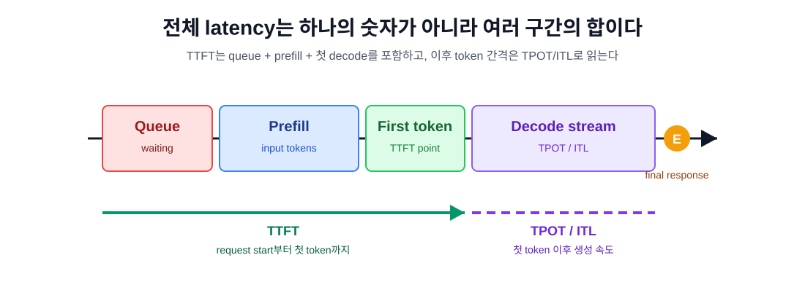
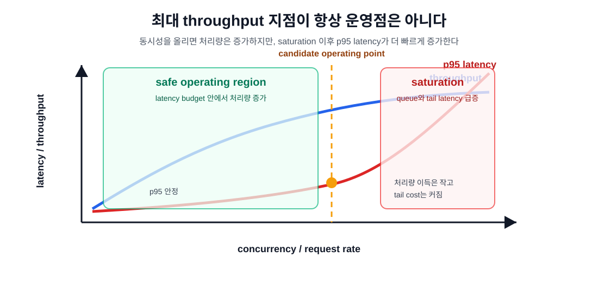

7장. TTFT, TPOT, throughput, p95를 읽는 법¶
6장에서 첫 LLM server를 띄웠다. 이제 다음 질문은 "빠른가?"이다. 이 질문은 단순해 보이지만, LLM serving에서는 가장 자주 잘못 묻는 질문이기도 하다.
tokens/sec가 높으면 빠른가? 평균 latency가 낮으면 사용자가 만족하는가? GPU utilization이 높으면 좋은 상태인가? p95가 튀면 모델이 느린 것인가, queue가 밀린 것인가, prompt가 긴 것인가?
이 장의 독자 질문은 다음과 같다.
tokens/sec가 높다는 말이 사용자에게 빠르다는 뜻인가?
답은 "그럴 수도 있지만, 그것만으로는 모른다"이다. LLM serving 성능은 하나의 숫자로 읽지 않는다. TTFT, TPOT, end-to-end latency, throughput, request rate, p95/p99, token shape, queue, KV cache를 함께 읽어야 한다.
먼저 workload를 고정한다¶
Benchmark 숫자를 읽기 전에 workload를 고정해야 한다. LLM serving에서 "요청 1개"는 일정한 단위가 아니다. 입력 token 200개와 출력 token 50개짜리 요청, 입력 token 16k개와 출력 token 50개짜리 요청, 입력 token 500개와 출력 token 2k개짜리 요청은 모두 다른 시스템 문제다.
첫 측정에서는 최소 세 workload를 분리한다.
| workload | 목적 | 주로 보는 지표 |
|---|---|---|
| short chat | 일반 대화형 응답 | TTFT, TPOT, p95 latency |
| long prompt | 긴 문서/RAG 질의 | TTFT, prefill time, KV cache usage |
| high concurrency | 동시 요청 처리 | throughput, queue time, p95/p99 |
이 세 가지를 섞어서 평균을 내면 아무것도 설명하지 못한다. short chat은 interactive latency 문제이고, long prompt는 prefill과 KV cache 문제이며, high concurrency는 scheduler와 queue 문제다.

TTFT: 사용자가 기다리기 시작하는 시간¶
TTFT는 time to first token이다. 요청을 보낸 시점부터 첫 token 또는 첫 streaming chunk가 도착할 때까지의 시간이다. NVIDIA GenAI-Perf 문서는 TTFT를 request가 전송된 뒤 첫 response가 수신될 때까지의 시간으로 정의한다. vLLM production metrics도 vllm:time_to_first_token_seconds histogram을 제공한다.
TTFT는 interactive chat에서 매우 중요하다. 사용자는 전체 답변이 끝나기 전에도 첫 글자가 빨리 나오면 시스템이 반응한다고 느낀다. 반대로 전체 답변 시간이 짧아도 첫 token이 늦으면 "멈춘 것 같다"고 느낀다.
TTFT에는 보통 다음이 섞인다.
- client와 server 사이 network 시간
- API gateway 또는 application queue
- runtime scheduler queue
- tokenizer와 prompt serialization
- prefill compute
- KV cache allocation
- 첫 decode step
따라서 TTFT가 높다고 바로 "모델이 느리다"고 말하면 안 된다. queue가 길어도 TTFT가 늘고, prompt가 길어도 TTFT가 늘고, cold start나 prefix cache miss가 있어도 TTFT가 늘어난다.
TTFT가 길 때 먼저 볼 것¶
| 관찰 | 가능한 원인 | 다음 확인 |
|---|---|---|
| 모든 요청의 TTFT가 길다 | model/runtime baseline 자체가 느림 | 단일 요청, 짧은 prompt로 재측정 |
| 긴 prompt만 TTFT가 길다 | prefill 병목 | input tokens, request_prefill_time_seconds |
| 동시 요청에서만 TTFT가 길다 | queue/scheduler pressure | num_requests_waiting, queue time |
| 같은 prefix 반복인데 TTFT가 줄지 않는다 | prefix cache 미적용 | cache hit, prompt normalization |
| 첫 요청만 유난히 느리다 | cold start, compile, weight/page cache | warmup 분리 |
TTFT는 "사용자 체감 시작점"이지만, 원인은 여러 계층에 있다.
TPOT와 ITL: token이 흘러나오는 속도¶
TPOT는 time per output token이다. 첫 token 이후 output token 하나를 생성하는 데 걸리는 평균 시간으로 이해하면 된다. vLLM benchmark 출력도 "Time per Output Token (excl. 1st token)"을 따로 보여준다. vLLM metrics에는 vllm:request_time_per_output_token_seconds가 있고, vllm:inter_token_latency_seconds도 제공된다.
ITL은 inter-token latency다. streaming 응답에서 중간 response 사이의 시간이다. NVIDIA GenAI-Perf는 inter token latency를 한 request 안에서 중간 response 사이의 시간으로 집계한다.
둘은 비슷해 보이지만 관점이 다르다.
| 지표 | 질문 | 해석 |
|---|---|---|
| TPOT | 이 요청의 decode는 평균적으로 token당 얼마나 걸렸는가? | request 단위 decode 속도 |
| ITL | streaming 중 token 간격은 얼마나 안정적인가? | 사용자에게 보이는 출력 리듬 |
| output tokens/sec | 전체 benchmark 동안 output token을 얼마나 많이 냈는가? | system throughput |
Interactive chat에서는 TTFT와 ITL이 중요하다. 사용자는 첫 token이 빠르게 나오고 이후 token이 일정하게 흐르기를 기대한다. Offline batch summarization에서는 TTFT보다 전체 throughput이 더 중요할 수 있다.
End-to-end latency: 제품 SLA의 숫자¶
End-to-end latency는 request를 보낸 시점부터 최종 response가 끝날 때까지의 시간이다. NVIDIA GenAI-Perf의 request latency 정의도 request 전송부터 final response 수신까지다. vLLM metrics에는 vllm:e2e_request_latency_seconds가 있다.
End-to-end latency는 제품 SLA에 가깝다. 사용자가 보는 최종 대기 시간이기 때문이다. 하지만 이 숫자만 보면 원인을 잃는다.
대략적으로는 다음처럼 볼 수 있다.
정확한 runtime 내부 구현은 더 복잡하지만, 운영자가 볼 mental model로는 충분하다.
이 식에서 중요한 점은 output length다. 같은 TPOT라도 output token이 50개인 요청과 1000개인 요청의 total latency는 다르다. 그래서 latency를 비교할 때는 input tokens와 output tokens를 항상 같이 기록해야 한다.
Throughput: 서버가 처리한 일의 양¶
Throughput은 서버가 단위 시간에 처리한 일의 양이다. 여기에는 여러 종류가 있다.
| 지표 | 의미 | 주의점 |
|---|---|---|
| request throughput | 초당 완료 request 수 | request token shape가 다르면 비교 불가 |
| output token throughput | 초당 생성 output token 수 | 사용자 latency를 직접 보장하지 않음 |
| total token throughput | input+output token 처리량 | prefill-heavy workload에서 커짐 |
| per-user throughput | 한 사용자에게 보이는 token/sec | 전체 throughput과 다를 수 있음 |
vLLM benchmark 예시는 request throughput, output token throughput, total token throughput을 함께 출력한다. NVIDIA GenAI-Perf도 output token throughput과 request throughput을 별도 지표로 둔다.
Throughput은 capacity planning에 중요하다. 하지만 throughput만 높이는 최적화는 tail latency를 망칠 수 있다. batch를 키우면 GPU utilization과 output token throughput은 좋아질 수 있지만, 요청이 queue에서 기다리는 시간이 늘면 p95 latency는 나빠질 수 있다.

p95와 p99: 평균이 숨기는 tail¶
평균 latency는 좋은 첫 요약이지만 production 판단에는 부족하다. 사용자 100명 중 95번째 또는 99번째 요청이 얼마나 느린지 봐야 한다. p95와 p99는 tail latency를 보여준다.
예를 들어 평균 latency가 1.2초이고 p99가 12초라면, 평균만 보고 "빠르다"고 말할 수 없다. 특히 LLM serving에서는 다음 이유로 tail이 쉽게 생긴다.
- 일부 request의 input token이 매우 길다.
- 일부 request의 output token이 매우 길다.
- 동시 요청이 몰려 queue가 생긴다.
- KV cache가 부족해 preemption 또는 eviction이 발생한다.
- prefix cache hit/miss가 섞인다.
- tool call, structured output, reasoning output처럼 decode path가 달라진다.
- cold start, model load, CUDA graph capture, compilation이 일부 요청에만 섞인다.
p95/p99를 볼 때도 token shape를 같이 봐야 한다. 긴 요청이 느린 것은 자연스럽다. 문제는 같은 token shape인데 tail이 길어지는 경우다.
Queue time을 분리하지 않으면 최적화가 틀린다¶
동시 요청이 들어오면 모든 요청이 즉시 GPU에서 실행되는 것은 아니다. scheduler는 현재 batch, KV cache capacity, max concurrency, prefill/decode 정책을 보고 요청을 실행한다. 밀린 요청은 waiting 상태에 머문다.
vLLM metrics에는 vllm:num_requests_running, vllm:num_requests_waiting, vllm:request_queue_time_seconds가 있다. num_requests_waiting_by_reason은 capacity 대기와 deferred 대기를 reason label로 나눠 보여준다.
Queue time을 분리하지 않으면 다음처럼 잘못 판단할 수 있다.
| 보이는 현상 | 성급한 결론 | 더 나은 해석 |
|---|---|---|
| p95 latency 증가 | model이 느리다 | queue가 길어진 것일 수 있다 |
| TTFT 증가 | prefill이 느리다 | scheduling 대기일 수 있다 |
| throughput 증가, latency 악화 | 최적화 성공 | capacity 한계에 가까워진 것일 수 있다 |
| GPU utilization 높음 | 좋은 상태 | tail SLA를 깨고 있을 수 있다 |
AI 인프라 엔지니어는 "느리다"를 "어느 단계에서 기다렸는가"로 바꿔 말해야 한다.
Benchmark command를 읽는 법¶
vLLM benchmark CLI는 online serving benchmark에서 vllm bench serve를 사용한다. 공식 예시는 먼저 vllm serve ...로 model server를 띄운 뒤, benchmark command로 dataset, backend, endpoint, prompt 수를 지정한다. 출력에는 successful requests, duration, total input/generated tokens, request throughput, output token throughput, TTFT, TPOT, ITL이 포함된다.
첫 실습에서는 다음처럼 작은 synthetic workload부터 시작하는 편이 안전하다.
vllm bench serve \
--backend openai-chat \
--model Qwen/Qwen2.5-1.5B-Instruct \
--endpoint /v1/chat/completions \
--dataset-name random \
--num-prompts 30 \
--random-input-len 512 \
--random-output-len 128 \
--max-concurrency 1 \
--save-result
그 다음 concurrency를 올린다.
vllm bench serve \
--backend openai-chat \
--model Qwen/Qwen2.5-1.5B-Instruct \
--endpoint /v1/chat/completions \
--dataset-name random \
--num-prompts 100 \
--random-input-len 512 \
--random-output-len 128 \
--max-concurrency 8 \
--save-result
여기서 중요한 것은 "숫자가 좋아졌는가"가 아니다. max_concurrency를 올렸을 때 다음이 어떻게 움직이는지 보는 것이다.
- request throughput
- output token throughput
- mean/p95/p99 TTFT
- mean/p95/p99 TPOT 또는 ITL
- e2e latency
- waiting requests
- KV cache usage
- GPU utilization
vLLM benchmark 문서는 --request-rate, --burstiness, --max-concurrency로 request 생성 속도와 동시 outstanding request를 조절할 수 있다고 설명한다. 특히 --request-rate=inf --max-concurrency=<limit> 패턴은 load balancer나 API gateway가 동시 연결을 제한하는 상황을 흉내 내는 데 유용하다.
세 workload로 결과표 만들기¶
7장의 실습 산출물은 benchmark command가 아니라 비교표다.
| run | input len | output len | concurrency | TTFT p95 | TPOT p95 | e2e p95 | output tok/s | waiting p95 | 해석 |
|---|---|---|---|---|---|---|---|---|---|
| A | 512 | 128 | 1 | 낮음 | 낮음 | 낮음 | 낮음 | 0 | baseline |
| B | 4096 | 128 | 1 | 증가 | 비슷 | 증가 | 비슷 | 0 | prefill 영향 |
| C | 512 | 128 | 8 | 증가 | 약간 증가 | 증가 | 증가 | 증가 | queue/scheduler 영향 |
| D | 512 | 1024 | 8 | 증가 | 증가 가능 | 크게 증가 | 증가 | 증가 | decode 길이 영향 |
수치는 실제 환경에서 채운다. 중요한 것은 "어떤 지표가 같이 움직였는가"다.
- input length를 늘렸더니 TTFT만 커졌다: prefill 쪽을 본다.
- output length를 늘렸더니 e2e latency가 커졌다: decode 길이가 지배한다.
- concurrency를 올렸더니 throughput과 p95가 같이 올랐다: saturation 지점을 찾는다.
- waiting requests가 생겼다: model compute 이전에 queue가 병목이다.
- KV cache usage가 높고 p95가 튄다: context length, max concurrency, eviction/preemption 정책을 본다.
성능 숫자를 비교할 때의 금지 사항¶
다음 비교는 피해야 한다.
다른 token shape를 같은 workload처럼 비교하기¶
한 결과는 평균 input 300 tokens, output 100 tokens이고 다른 결과는 input 4k tokens, output 100 tokens라면 같은 benchmark가 아니다. TTFT가 다른 것은 당연하다.
streaming과 non-streaming 결과를 섞기¶
TTFT와 ITL은 streaming 관찰과 관련이 깊다. non-streaming client에서는 첫 token 시점을 직접 보지 못한다. end-to-end latency만 비교하게 된다.
평균만 보고 tail을 무시하기¶
평균은 capacity planning 초기에 유용하지만 product SLA에는 p95/p99가 더 중요하다. 특히 multi-tenant serving에서는 tail이 사용자 불만과 incident로 이어진다.
GPU utilization만 보고 성공이라고 말하기¶
GPU utilization이 높다는 것은 GPU가 바쁘다는 뜻이지, 사용자가 빠르게 응답을 받는다는 뜻은 아니다. queue가 길어져도 GPU는 바쁠 수 있다.
benchmark dataset을 production workload라고 착각하기¶
ShareGPT, random, synthetic workload는 비교와 재현에는 좋지만 실제 traffic을 그대로 대표하지 않는다. Production에서는 prompt 길이, output 길이, tool call 비율, cache hit 비율, tenant별 burst가 다르다.
Cost per token은 마지막에 붙인다¶
운영에서는 비용도 봐야 한다. 하지만 비용을 너무 일찍 붙이면 잘못된 결론이 나온다. 먼저 latency와 throughput을 안정적으로 읽어야 한다.
대략적인 cost per 1M output tokens는 다음처럼 계산할 수 있다.
이 계산은 단순화다. 실제 비용에는 다음이 들어간다.
- GPU instance 비용
- idle capacity
- replica 여유분
- prefill-heavy workload의 input token 처리 비용
- CPU, memory, network, storage
- observability와 logging 비용
- failed/retried request
- model load와 warmup 시간
따라서 cost per token은 throughput 숫자 하나로 결정하지 않는다. SLA를 만족하는 운영점에서 계산해야 한다.
읽는 순서: 네 단계¶
Benchmark 결과를 받으면 다음 순서로 읽는다.
- Workload shape: input tokens, output tokens, concurrency, request rate, streaming 여부를 확인한다.
- User-facing latency: TTFT, ITL/TPOT, e2e latency의 p50/p95/p99를 본다.
- Server pressure: request throughput, output token throughput, queue time, running/waiting requests, KV cache usage를 본다.
- Bottleneck hypothesis: prefill 문제인지, decode 문제인지, queue 문제인지, KV cache 문제인지, workload mismatch인지 가설을 적는다.
이 네 단계를 거치면 benchmark 숫자가 "좋다/나쁘다"가 아니라 "어느 운영점에서 어떤 trade-off가 생겼다"로 바뀐다.
작은 incident 예시¶
상황을 하나 보자.
팀이 6장에서 만든 vLLM server에 concurrency 1, 4, 8, 16으로 benchmark를 돌렸다. 결과는 다음과 같았다.
| concurrency | output tok/s | TTFT p95 | TPOT p95 | e2e p95 | waiting |
|---|---|---|---|---|---|
| 1 | 120 | 180 ms | 12 ms | 1.8 s | 0 |
| 4 | 360 | 260 ms | 14 ms | 2.1 s | 0 |
| 8 | 520 | 900 ms | 18 ms | 4.8 s | 일부 |
| 16 | 570 | 3.5 s | 30 ms | 13 s | 많음 |
concurrency 16에서 throughput은 조금 더 좋아졌지만 p95 latency는 크게 나빠졌다. 이 상태를 "성능이 좋아졌다"고 말하면 안 된다. 이 서버의 interactive workload 운영점은 concurrency 4와 8 사이일 가능성이 높다. 이후 할 일은 더 큰 batch를 밀어 넣는 것이 아니라 다음 중 하나를 고르는 것이다.
- latency budget을 기준으로
max_concurrency를 제한한다. - replica를 늘린다.
- input/output token limit을 조정한다.
- prefix caching 또는 prompt 구조를 검토한다.
- 더 작은 model이나 quantization을 검토한다.
- prefill/decode disaggregation 같은 구조적 변경은 나중 단계에서 검토한다.
성능 지표는 최적화 목록을 자동으로 주지 않는다. 하지만 잘 읽으면 어디를 만지면 안 되는지 먼저 알려준다.
이 장의 결론¶
LLM serving 성능은 하나의 숫자로 읽지 않는다. 사용자 체감, 서버 처리량, tail latency, workload shape, queue pressure를 분리해서 읽어야 한다.
- TTFT는 사용자가 응답을 받기 시작하는 시간이고, queue와 prefill 영향을 크게 받는다.
- TPOT/ITL은 첫 token 이후 token이 흘러나오는 속도이며, decode 병목을 읽는 데 중요하다.
- End-to-end latency는 제품 SLA에 가깝지만 원인 분석에는 분해가 필요하다.
- Throughput은 capacity planning에 중요하지만 tail latency를 보장하지 않는다.
- p95/p99는 평균이 숨기는 긴 요청, queue, KV cache pressure를 드러낸다.
- Benchmark 결과는 항상 input tokens, output tokens, concurrency, request rate와 함께 읽어야 한다.
다음 장에서는 이 측정값을 바탕으로 quantization을 다룬다. Quantization은 memory와 throughput을 개선할 수 있지만, kernel support, accuracy, latency, KV cache 정책에 따라 기대와 다른 결과를 만들 수 있다.